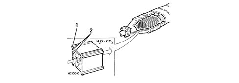
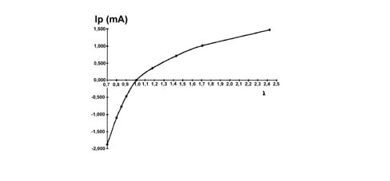
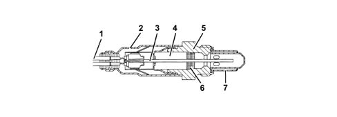

INTRODUCTION - EXHAUST EMISSION CONTROL SYSTEM - Versions without DPF
- Path
- Descriptions > 10 ENGINE > 1080 EMISSION CONTROL SYSTEM > 1080B EXHAUST EMISSION CONTROL SYSTEM > INTRODUCTION - EXHAUST EMISSION CONTROL SYSTEM - Versions without DPF
- Kind
- system description
- Applies to
- engines: 1.9 JTD 8v, 1.9 JTD 16v; all production periods
- Interactive page
- https://sloeber94.github.io/elrnDB-fCrm/en/#/194002293
Applies to: engines: 1.9 JTD 8v, 1.9 JTD 16v; all production periods
DESCRIPTION OF COMPONENTS
Catalytic converter
The catalytic converter is a post-treatment device for oxidizing the CO, HC and particles transforming them into carbon dioxide (CO2) and water vapour (H20).
The catalytic converter consists of a ceramic, honeycomb structure (1) with cells impregnated with platinum (2) which catalyzes the oxidation reactions.
The exhaust gases passing through the cells heat the catalyzer triggering off the conversion of the pollutants into inert compounds.
The oxidizing chemical reaction of the CO, HC and particles is effective at temperatures of between 200 and 350°C.
In effect, above 350°C the sulphur contained in the diesel fuel starts to oxidize producing sulphur dioxide and sulphur trioxide.

LAMBDA PROBE
The "UEGO" linear planar type Lambda sensor informs the engine management control unit of the progress of the combustion.
The sensor is an oxygen sensor containing two comparative cells that make it possible to measure the ? values (ratio between the quantity of intake air and the quantity of theoretical air required for complete combustion of the fuel injected) included in a broad range from ? = 0.7 (rich mixture) and value in air ? = 1 (poor mixture).
It is used to compare the reading of the air flow meter with the one mapped in the control unit and, if necessary, correct the fuel injection to be within the emission limits.
The operation of the sensor takes place by comparing the concentration of oxygen in the reference cell, housed inside the sensor, with the combustion gas flowing inside the comparison cell next to the reference one. Depending on the resulting imbalance, the engine management control unit regulates a current signal (lp) that rebalances the oxygen content in the comparison cell through an electrochemical action. The value of lp is proportional to the value of ? measured according to the graph illustrated below.

In order to activate the operation of the sensor quickly, the sensor contains a heater operated in duty cycle by the engine management control unit according to a calibrated strategy.
The two comparison cells and the heater are incorporated in the same planar ceramic element (layers of several ceramic elements) in order to keep the structure compact and guarantee high response and heating speeds for the actual element.

1. Connection lead
2. Protective sleeve
3. Planar sensor element
4. Ceramic support pipe
5. Sensor seat
6. Ceramic seal
7, Protective pipe
ELECTRICAL SPECIFICATIONS:
- Max 7.5 V heater power supply from control unit
- Heater resistance 3.2 ± 0.8 O
Pin out
1. Pumping current (lp)
2. Virtual mass
3. Heater (-)
4. Heater (+)
5. Calibration current
6. Nerst voltage